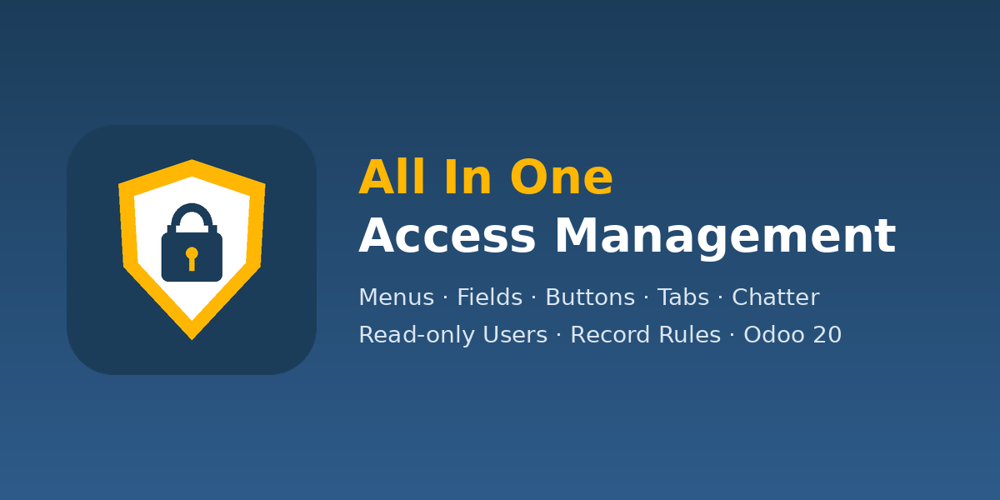
Control what every user can see and do from one screen, without writing code. Group restrictions in Access Profiles and assign them to users.
state == 'sale'user, company_ids and dates in domainsOne profile per role. Assign it to as many users as you want.
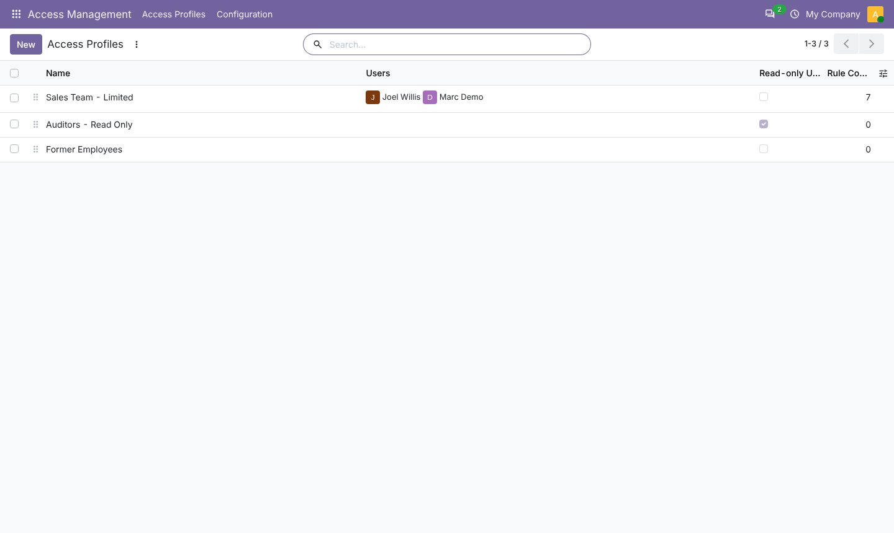
Read-only user, disable developer mode, disable login, block the external API and app installation, and global chatter / export / import options.
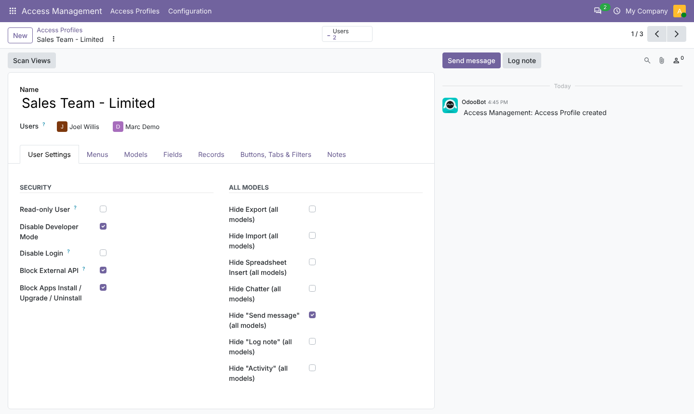
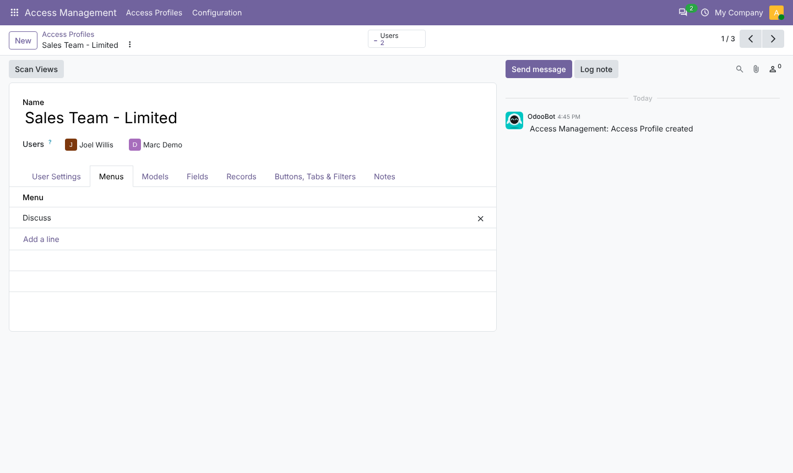
Read only, no create / edit / delete, hide Duplicate, Archive, Export, Import, Spreadsheet, chatter buttons, view types, reports and actions.
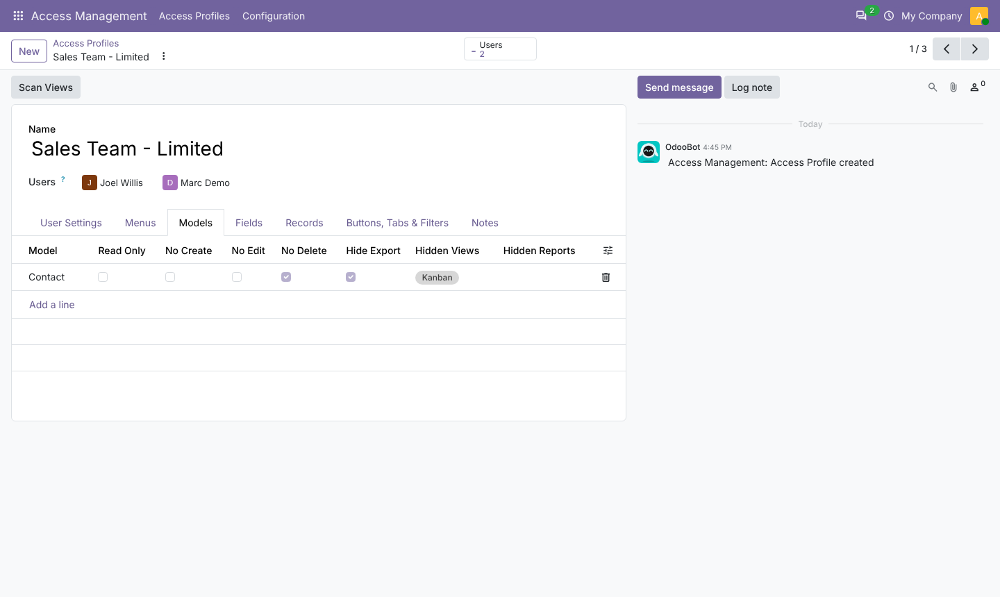
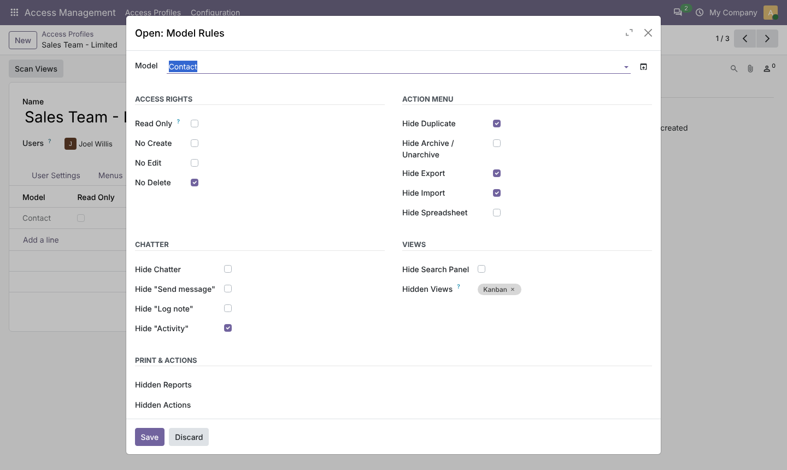
Invisible, read only or required fields, always or only when a condition is true.
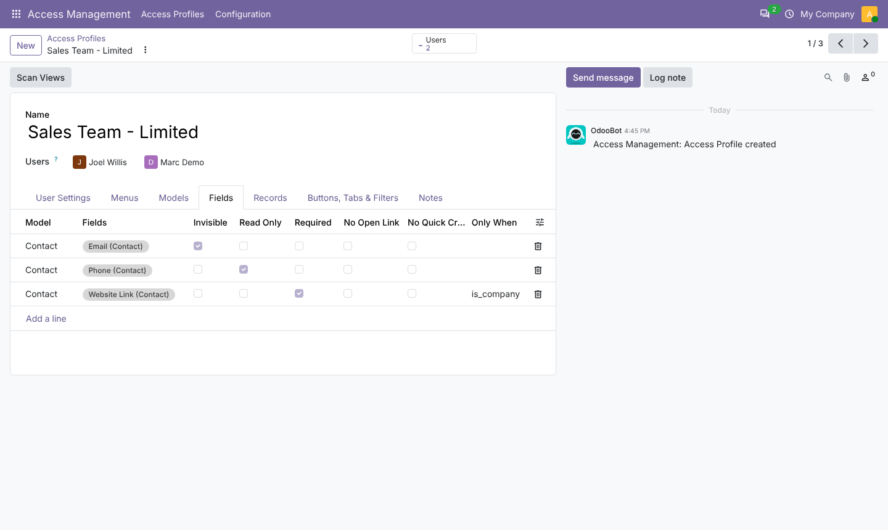
Limit which records a user can read, edit, create or delete with a domain.
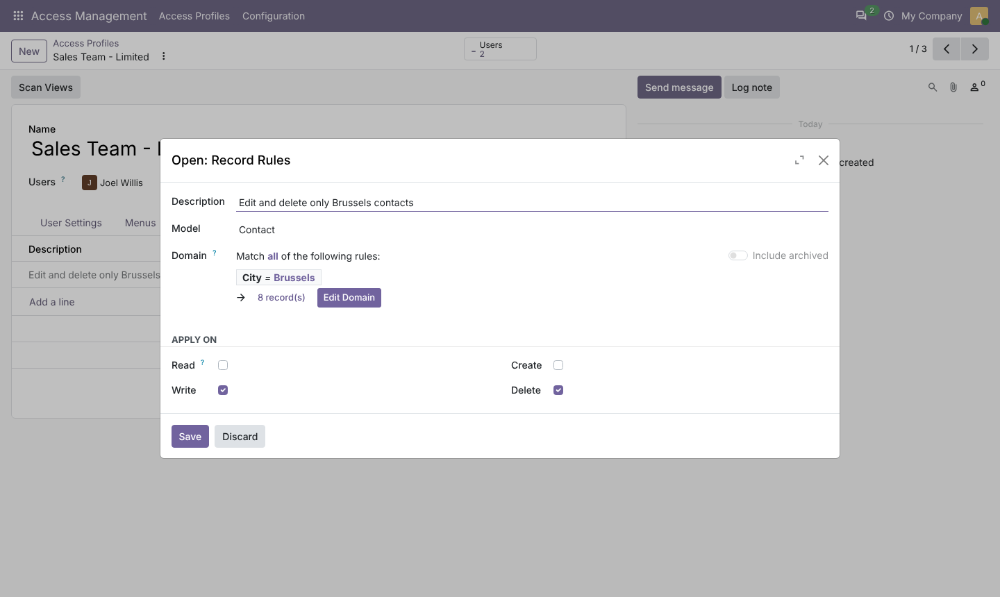
Click Scan Views and pick the buttons, tabs, links, filters and group-bys to hide.
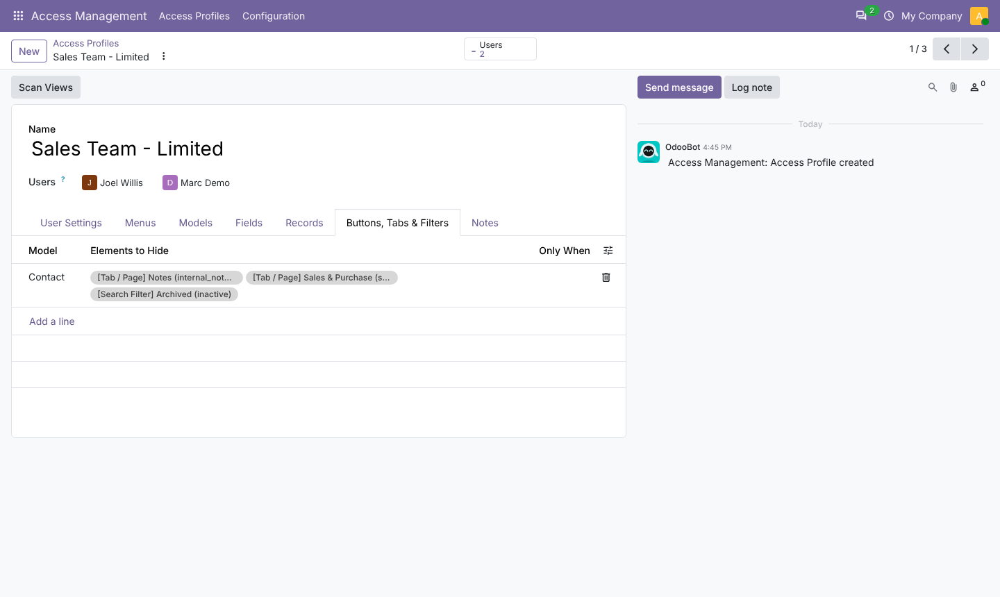
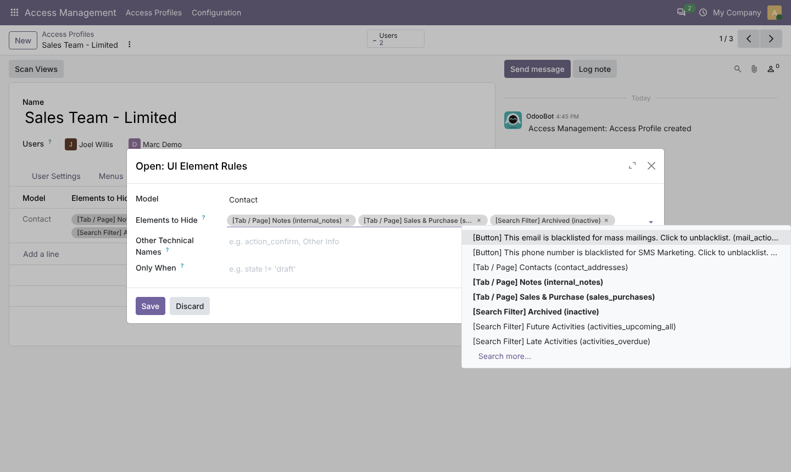
Administrator: all columns, all views and the full Actions menu.
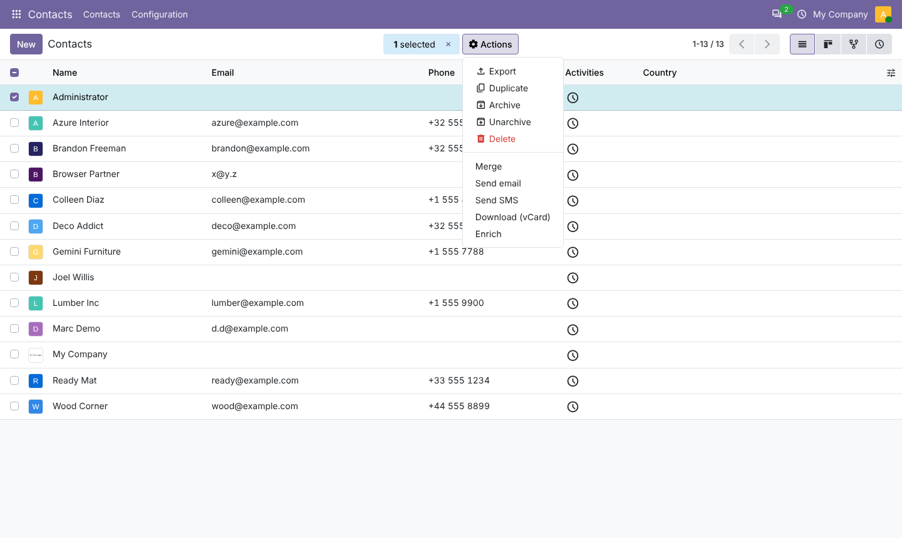
Restricted user: no Email column, no Kanban view, no Export / Duplicate / Delete.
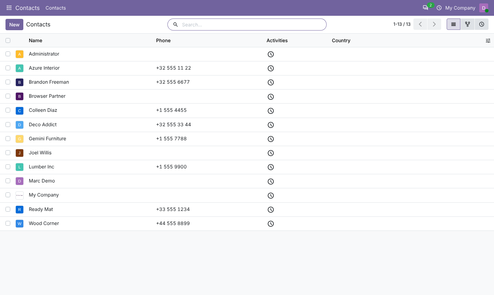
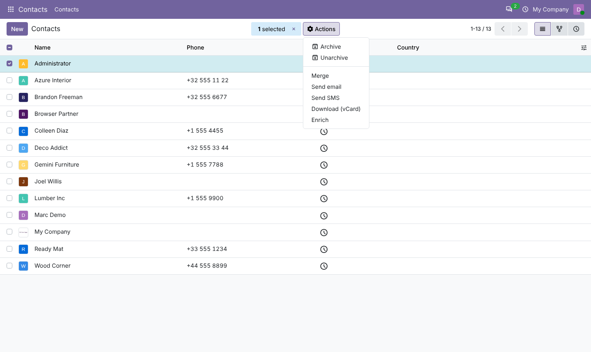
Administrator form vs restricted user form: email hidden, phone read only, "Sales & Purchase" and "Notes" tabs hidden, "Send message" and "Activity" removed from the chatter.
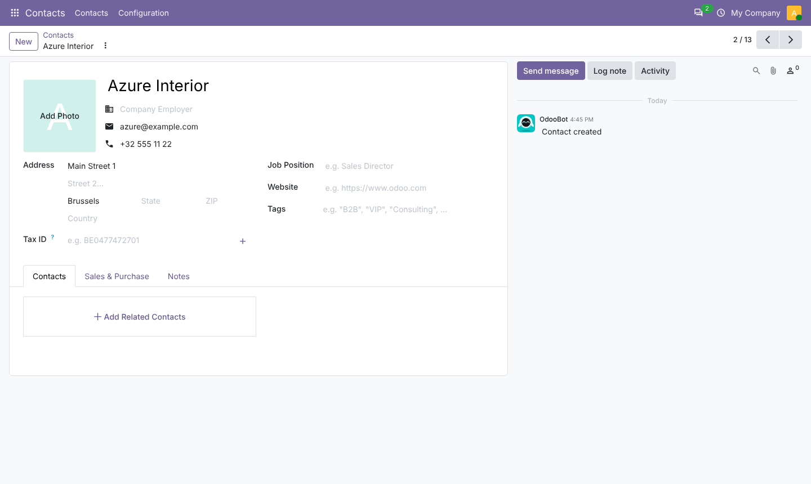
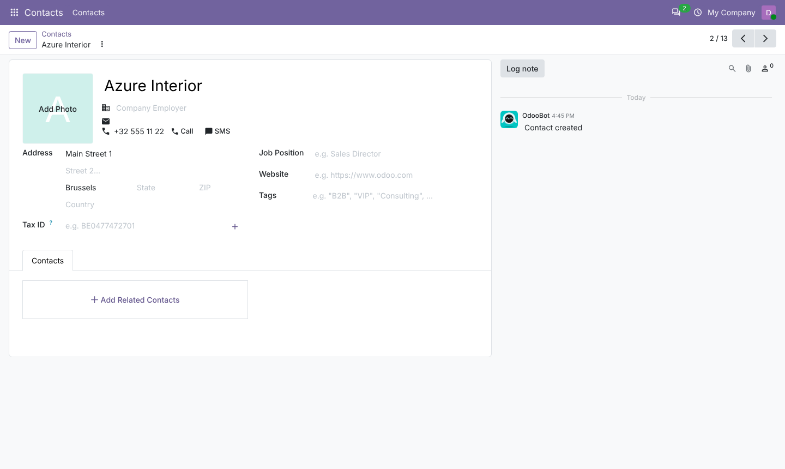
Safety: profiles never apply to the superuser (OdooBot), and the access profile records themselves are never restricted. Test new profiles on a staging database before production.
Donika Enterprise · shra.patel225@gmail.com